Práctica 5.5: Despliegue de un Servidor de Autenticación RADIUS con FreeRADIUS
Datos de la Práctica
- Módulo: Seguridad y Alta Disponibilidad (SAD - 0378)
- Unidad Didáctica: UD5 - Seguridad Activa y Auditorías en Redes Corporativas
- Requisitos: Un servidor Linux (Debian o Ubuntu) para albergar FreeRADIUS 3.0, un punto de acceso/router inalámbrico o router MikroTik en GNS3/VirtualBox (con soporte WPA2/WPA3 Enterprise o Dot1X / IEEE 802.1X), y un equipo cliente (móvil suplicante o máquina Linux con
wpa_supplicant). Privilegiossudo.
1. Objetivos de la Práctica
- Comprender el funcionamiento del protocolo de autenticación centralizada RADIUS (Remote Authentication Dial-In User Service) y la arquitectura AAA (Authentication, Authorization, Accounting).
- Desplegar y configurar el servicio FreeRADIUS 3.0 en una distribución Linux.
- Configurar usuarios, contraseñas y parámetros de red en el archivo
/etc/freeradius/3.0/users. - Registrar equipos de red (Puntos de Acceso / Routers NAS - Network Access Server) como clientes autorizados en
/etc/freeradius/3.0/clients.confmediante clave compartida (secret). - Habilitar la auditoría de accesos y registro de trazas de autenticación (Accounting) en FreeRADIUS.
- Configurar un punto de acceso inalámbrico o router MikroTik en modo WPA2/WPA3-Enterprise / Dot1X (IEEE 802.1X) vinculado al servidor RADIUS.
- Realizar pruebas de autenticación desde un dispositivo cliente (suplicante Wi-Fi móvil o suplicante cableado Linux mediante
wpa_supplicant) y auditar los accesos registrados en/var/log/freeradius/radius.log.
2. Introducción Teórica: La Arquitectura AAA e IEEE 802.1X
En redes corporativas, el uso de claves compartidas (WPA2-Personal / PSK) presenta graves inconvenientes: todos los empleados usan la misma contraseña, no se puede identificar individualmente quién accede y cambiar la clave exige reconfigurar todos los dispositivos.
Para resolver esto se emplea el estándar IEEE 802.1X con un servidor RADIUS (Modelo AAA):
Componentes de la Arquitectura:
- Suplicante (Cliente): El dispositivo (PC, smartphone) que solicita acceso a la red proporcionando credenciales individuales.
- Autenticador (NAS - Network Access Server): El switch, router o punto de acceso Wi-Fi. Bloquea todo el tráfico ordinario salvo las tramas de autenticación EAP hacia el servidor RADIUS.
- Servidor de Autenticación (FreeRADIUS): Valida las credenciales recibidas, consulta las políticas de acceso y responde con un mensaje
Access-AcceptoAccess-Reject.
Posibles Escenarios de Montaje de la Práctica
Para la realización del laboratorio puedes optar por uno de los escenarios siguientes en función del equipamiento disponible:
Opción A: Escenario con Punto de Acceso dedicado (AP)
En este montaje el Punto de Acceso actúa como autenticador conectado directamente a la misma red local que el servidor FreeRADIUS:
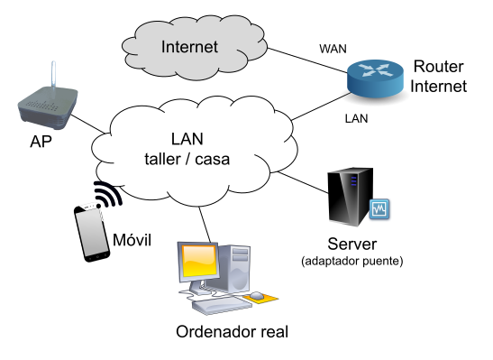
Emulador Web de Puntos de Acceso
Para explorar las opciones de configuración web de un punto de acceso WPA-Enterprise sin hardware físico, también puedes consultar el Emulador Web de Punto de Acceso D-Link.
Opción B: Escenario con Router Inalámbrico
En este montaje se emplea un router Wi-Fi doméstico o de laboratorio configurado para delegar la autenticación de su red inalámbrica en el servidor FreeRADIUS:
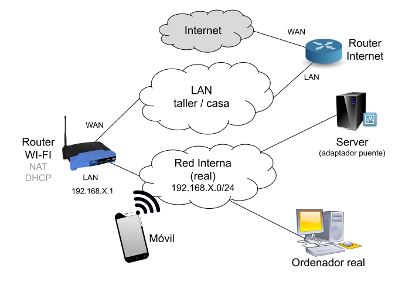
Opción C: Escenario Emulado con Router MikroTik (Dot1X Cableado)
Si no dispones de un punto de acceso físico en casa o en el aula, puedes realizar la práctica mediante emulación en GNS3 o máquina virtual, configurando el servicio Dot1X sobre un puerto Ethernet de MikroTik RouterOS y utilizando un cliente Linux con wpa_supplicant.
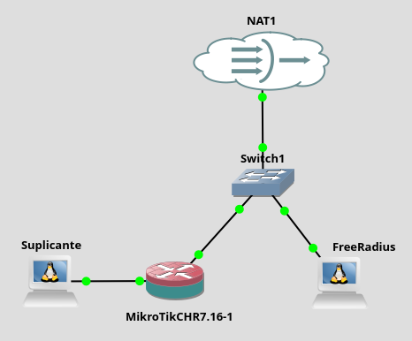
3. Desarrollo Paso a Paso de la Práctica
Tarea 1: Instalación de FreeRADIUS y Utilidades
- En el servidor Linux destinado a RADIUS, actualiza los repositorios e instala FreeRADIUS y sus herramientas de prueba (
freeradius-utils): - Comprueba que el servicio se encuentra activo y escuchando en los puertos UDP 1812 (Autenticación) y 1813 (Anotación / Accounting):
Tarea 2: Configuración de Usuarios y Credenciales en users
- Abre el archivo de usuarios de FreeRADIUS:
- Añade al principio del archivo la definición de dos usuarios de prueba con contraseñas en claro (
Cleartext-Password): - Guarda los cambios (
Ctrl + O, Enter) y sal (Ctrl + X). - Reinicia el servicio FreeRADIUS:
Tarea 3: Verificación Local del Servidor con radtest
Antes de conectar el punto de acceso inalámbrico o el router, probaremos localmente que el motor de FreeRADIUS y la base de datos de usuarios responden correctamente:
-
Ejecuta el comando de diagnóstico
radtestsimulando una petición de autenticación:- Desglose de los parámetros del comando:
roman: Nombre de usuario dado de alta en/etc/freeradius/3.0/users.ClaveSegura2026!: Contraseña del usuario.127.0.0.1: Dirección IP del servidor RADIUS a consultar (localhost).1812: Puerto estándar UDP de autenticación RADIUS.testing123: Clave secreta que usalocalhostpara validarse frente a FreeRADIUS (definida por defecto en/etc/freeradius/3.0/clients.confpara el cliente local).
- Desglose de los parámetros del comando:
-
Resultado esperado:
Si la clave o el usuario son erróneos, el servidor devolveráSent Access-Request Id 78 from 0.0.0.0:54321 to 127.0.0.1:1812 Received Access-Accept Id 78 from 127.0.0.1:1812 length 20Received Access-Reject.
Tarea 4: Configuración de Clientes NAS en clients.conf
Para que el punto de acceso Wi-Fi o router pueda enviar peticiones al servidor RADIUS, debemos registrar su dirección IP y una clave compartida (Secret):
- Abre el archivo de clientes:
- Añade un nuevo bloque para registrar tu Punto de Acceso / Router Wi-Fi o MikroTik (ejemplo con la subred de red local
192.168.122.0/24):
Direccionamiento IP del cliente NAS
Si conoces la IP exacta del Punto de Acceso o router MikroTik, puedes indicarla de forma individualizada (ej. ipaddr = 192.168.122.99). Indicar la subred completa con máscara /24 resulta muy cómodo en laboratorio para permitir que cualquier equipo de esa red actúe como autenticador sin generar errores de rechazo.
- Guarda los cambios (
Ctrl + O, Enter,Ctrl + X) y reinicia FreeRADIUS:
Tarea 5: Activación de Logs de Auditoría (Accounting)
- Abre el fichero principal de configuración
/etc/freeradius/3.0/radiusd.conf: - Localiza la sección
log { ... }y asegúrate de habilitar el registro de intentos de acceso exitosos y fallidos: - Reinicia el servicio para aplicar los cambios:
Tarea 6: Configuración del Punto de Acceso Inalámbrico (WPA2/WPA3 Enterprise)
Si dispones de un punto de acceso (AP) físico o emulador conectado a la misma red local que el servidor FreeRADIUS, podrás realizar una prueba de validación con un cliente móvil o PC inalámbrico.
- Accede a la interfaz web de administración de tu router o AP Wi-Fi.
- En la sección de configuración de la red inalámbrica, selecciona el modo de seguridad corporativo:
- Modo de Seguridad: WPA2-Enterprise / WPA3-Enterprise (IEEE 802.1X).
- Dirección IP del Servidor RADIUS: La IP de tu servidor Linux FreeRADIUS (ej.
192.168.122.X). - Puerto RADIUS:
1812UDP. - Clave compartida (Secret):
ElCaminas(debe coincidir exactamente con la configurada enclients.conf).
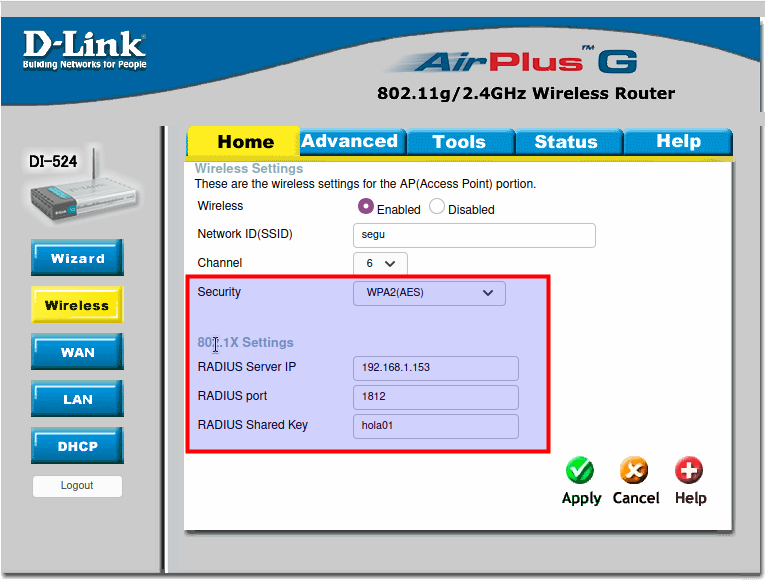
Validación de Conexión desde el Suplicante Móvil y Auditoría de Logs
- Desde un smartphone o PC cliente, busca la red Wi-Fi corporativa emitida por el AP.
- Al conectar, el sistema operativo solicitará los parámetros de autenticación Enterprise (EAP-PEAP):
- Método EAP: PEAP (o TTLS).
- Autenticación de Fase 2 (Inner): MSCHAPv2 (o GTC).
- Certificado CA: "No validar" (o seleccionar certificado de pruebas).
- Identidad / Usuario:
roman - Contraseña:
ClaveSegura2026!
| Conexión en Smartphone Android | Parámetros de Seguridad Avanzados |
|---|---|
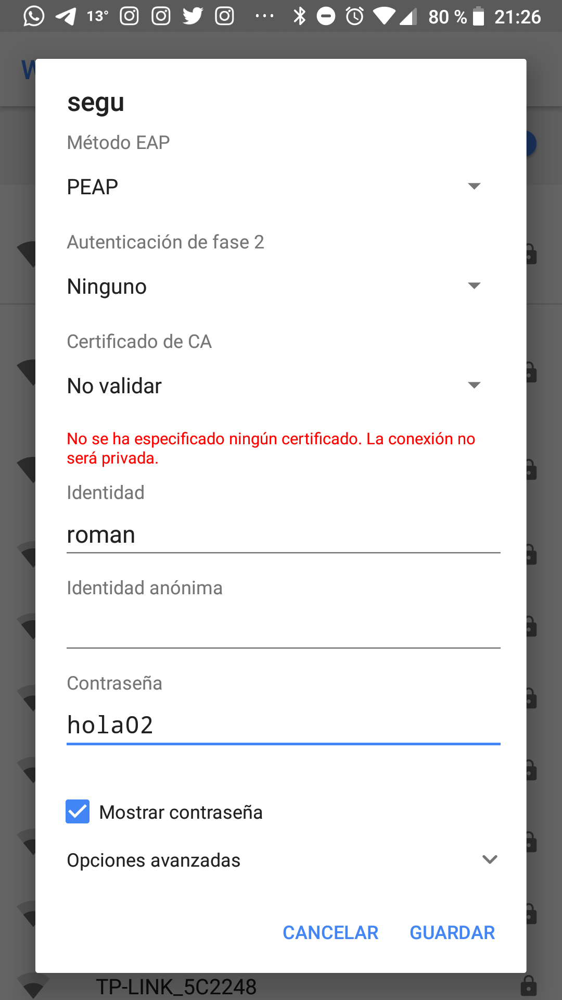 |
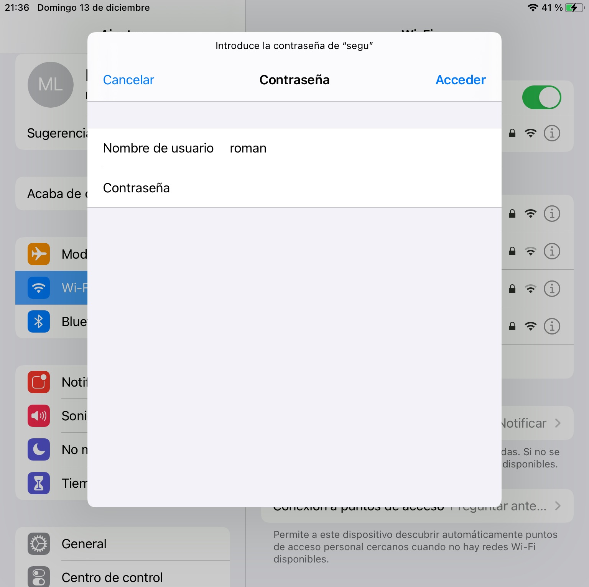 |
- Conéctate a la red y comprueba que se valida la identidad y se obtiene dirección IP para navegar.
- En el servidor FreeRADIUS, audita el registro de accesos en tiempo real:
- Realiza una prueba introduciendo una contraseña incorrecta y verifica que queda registrado el intento fallido (
Auth: Login incorrect...).
Tarea 7: Emulación de Autenticación 802.1X con Router MikroTik (Escenario Cableado Dot1X)
Si no dispones de un punto de acceso Wi-Fi físico, puedes realizar la autenticación de red con un router MikroTik RouterOS simulando la conexión mediante cable en la interfaz ether2.
Para recrear el escenario de autenticación WPA2/WPA3 Enterprise (802.1X/EAP) sobre un enlace Ethernet en RouterOS, no se utiliza la sección Wireless (ya que ether2 es un puerto Ethernet físico), sino el servicio Dot1X. El router MikroTik actúa como NAS / Autenticador 802.1X, delegando la validación de credenciales en el servidor FreeRADIUS conectado a ether1, mientras que el equipo cliente conectado a ether2 actúa como Suplicante (Supplicant).
Fase 1: Acceso Inicial a MikroTik y Entorno WebFig / WinBox
En primer lugar, abre la consola en MikroTik (o terminal en entorno virtualizado) para obtener su dirección IP de gestión:
- Introduce el usuario por defecto:
admin. - Contraseña (Password): dejar en blanco (pulsar Enter).
- Cuando el sistema solicite asignar una nueva contraseña al usuario
admin, introduce una clave sencilla dos veces (ej.admin). - Consulta la dirección IP asignada a la interfaz de administración:
- Desde el navegador web de tu equipo anfitrión o máquina de gestión, accede a la IP obtenida (
http://<IP_MIKROTIK>) para administrar el router mediante WebFig (o mediante la utilidad WinBox).
Fase 2: Configuración del Router MikroTik como Autenticador Dot1X
A continuación se detalla la configuración paso a paso a través de la interfaz gráfica (WebFig / WinBox):
- Configuración de la red local en
ether2(QuickSet): Accede a QuickSet y define el direccionamiento IP de la red local sobre la interfazether2. Asegúrate de habilitar el servidor DHCP y el enmascaramiento NAT:
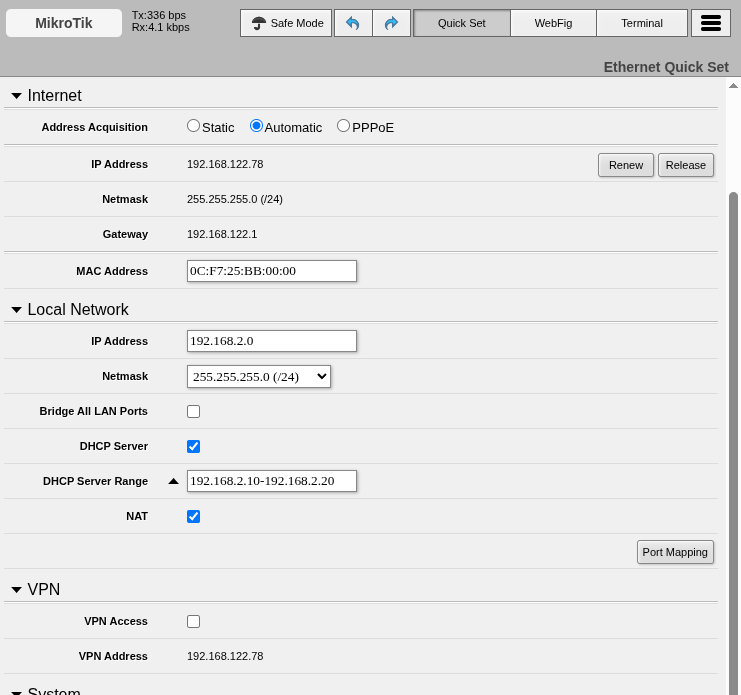
- Registrar el servidor RADIUS en RouterOS (
/radius): Define el servidor FreeRADIUS como backend de autenticación para los servicios Dot1X:- En el menú lateral, accede a RADIUS.
- Haz clic en + (Add) para añadir una nueva entrada de cliente RADIUS.
- Configura los parámetros de conexión tal como se ilustra en la captura:
- Service: Marca la casilla
dot1x. - Address: Dirección IP del servidor FreeRADIUS (ej.
192.168.122.99). - Secret: Clave secreta compartida configurada en
clients.conf(ElCaminas). - Authentication Port:
1812. - Accounting Port:
1813.
- Service: Marca la casilla
- Haz clic en OK para guardar.
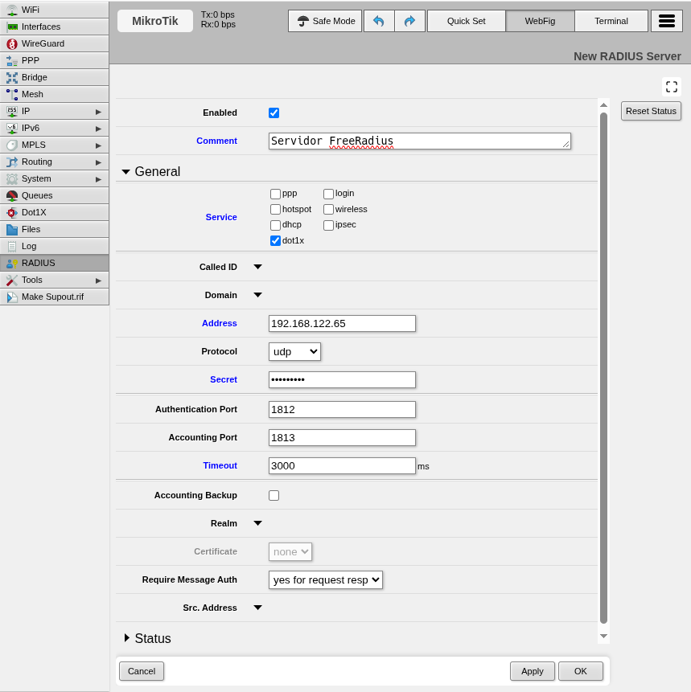
- Configurar el puerto
ether2como autenticador 802.1X: Activa el servidor Dot1X en la interfaz cableadaether2que da servicio al equipo cliente:- En el menú lateral, accede a Dot1X.
- En la pestaña Server, haz clic en + (Add).
- Selecciona la interfaz
ether2y el Ath. Types: dot1x. - Haz clic en OK para activar el filtrado de puerto.
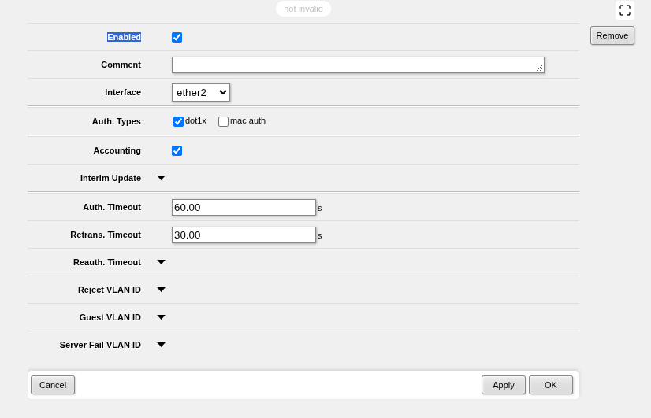
- En la pestaña Client haz clic en "Add new"
- Configura según la imagen
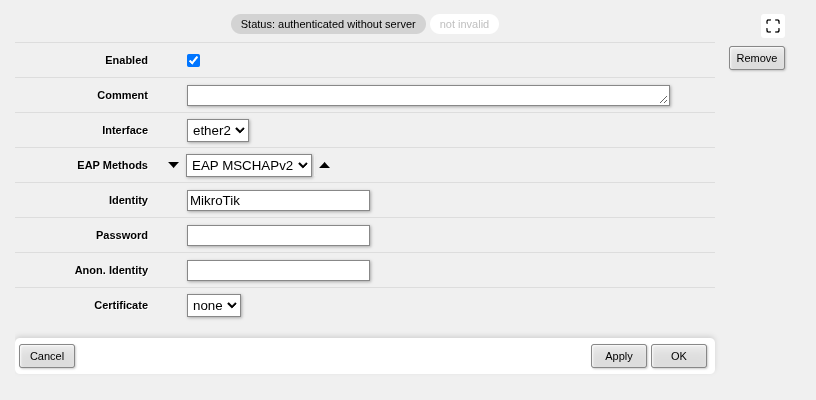
Comportamiento del tráfico en el puerto 802.1X
Mientras el puerto no esté autenticado, ether2 permanecerá bloqueado a nivel de Capa 2 para cualquier tráfico ordinario (IP, ARP, DHCP). Únicamente se permite el paso de tramas EAPOL (EAP over LAN). En cuanto el suplicante se valida satisfactoriamente frente a FreeRADIUS, el estado del puerto cambia automáticamente a authorized, permitiendo el paso completo del tráfico de red.
Fase 3: Configuración del Suplicante en Linux (wpa_supplicant) y Validación
Como equipo suplicante utilizaremos una máquina Linux (Debian o Ubuntu) conectada al puerto ether2 del router MikroTik.
Para negociar la autenticación IEEE 802.1X cableada en Linux se requiere el demonio wpa_supplicant:
-
Instalación del software suplicante:
-
Creación del archivo de configuración 802.1X: Crea el archivo
/etc/wpa_supplicant/dot1x.confcon las credenciales del usuario:
!!! tip "Directiva ap_scan=0 en redes cableadas"
La directiva ap_scan=0 es obligatoria para interfaces cableadas (Ethernet), ya que indica a wpa_supplicant que no busque balizas Wi-Fi (beacons) y opere directamente sobre tramas EAPOL cableadas.
-
Lanzar la autenticación 802.1X: Identifica el nombre de la interfaz de red del cliente conectada a
ether2(por ejemplo,ens4oeth0medianteip link) y ejecuta el demonio en segundo plano:-D wired: Especifica el controlador (driver) para interfaces cableadas Ethernet.-i ens4: Interfaz de red del cliente conectada al puertoether2de MikroTik.-c /etc/wpa_supplicant/dot1x.conf: Ruta al fichero de configuración Dot1X.-dd: Modo de depuración (debug) verbose para visualizar en consola el intercambio completo de tramas EAP (EAP-Request/Identity, intercambio TLS/MSCHAPv2 y EAP-Success).
-
Renovación y comprobación de direccionamiento IP: Una vez recibido el mensaje
(O bien reinicia la pila de red del cliente:EAP-Success, solicita dirección IP al servidor DHCP de MikroTik:sudo systemctl restart networking)
Fase 4: Comprobación de Estado en MikroTik y Auditoría en FreeRADIUS
Una vez que el puerto pasa a estado autorizado, el conmutador de MikroTik permite el tráfico normal. Puedes verificarlo tanto en el router como en el servidor:
- Supervisión en MikroTik RouterOS (WebFig / WinBox):
En la sección Dot1X, comprueba las pestañas State y Active:
- En la pestaña State, verifica que el puerto
ether2figura comoauthorized. - En la pestaña Active, comprueba que aparece la sesión autenticada con la MAC del cliente y el usuario
roman.
- En la pestaña State, verifica que el puerto
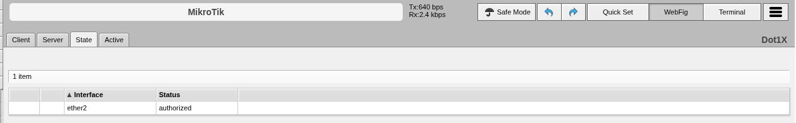
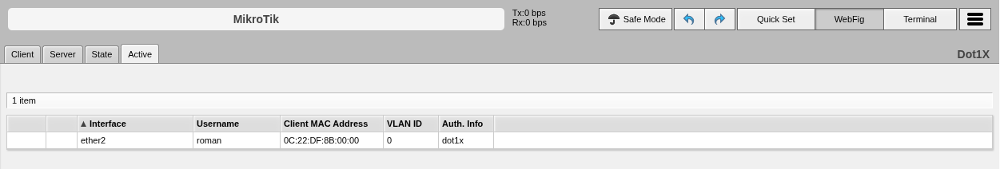
- Auditoría de logs en el servidor FreeRADIUS:
En el servidor Linux FreeRADIUS, consulta el archivo de registro para verificar la traza de acceso:
Comprueba que aparece el evento
Login OK: [roman] (from client MikroTik port ...)certificando la concesión de acceso nominal.
4. Cheatsheet de Administración de FreeRADIUS
| Acción / Objetivo | Fichero o Comando | Sintaxis / Detalle |
|---|---|---|
| Instalar FreeRADIUS | Comando apt |
sudo apt install freeradius freeradius-utils |
| Añadir usuario y clave | /etc/freeradius/3.0/users |
usuario Cleartext-Password := "contraseña" |
| Registrar cliente NAS / AP | /etc/freeradius/3.0/clients.conf |
client AP { ipaddr = 192.168.1.X; secret = clave } |
| Auditoría de accesos | /etc/freeradius/3.0/radiusd.conf |
auth = yes; auth_badpass = yes; auth_goodpass = yes |
| Prueba local de credenciales | Comando radtest |
radtest <user> <pass> <host> 1812 <secret> |
| Modo Depuración (Debug Manual) | Comando freeradius -X |
Ejecuta el servidor en primer plano mostrando trazas detalladas. |
| Suplicante 802.1X Cableado | Comando wpa_supplicant |
sudo wpa_supplicant -D wired -i <iface> -c dot1x.conf -dd & |
| Inspección de Logs de Acceso | /var/log/freeradius/radius.log |
sudo tail -f /var/log/freeradius/radius.log |
5. Cuestiones de Autoevaluación
- Ventaja organizativa: ¿Por qué la arquitectura WPA2/WPA3 Enterprise basada en RADIUS es infinitamente más segura en una empresa que el uso de una clave Wi-Fi compartida (PSK)?
- Función del Secret: ¿Qué función cumple la clave secreta compartida (secret) configurada en
clients.confentre el servidor RADIUS y el Punto de Acceso AP o router MikroTik? - Uso del modo depuración (
freeradius -X): Si un cliente no puede autenticarse a través del AP o MikroTik, ¿por qué se recomienda detener el serviciosystemctly ejecutarsudo freeradius -Xpara diagnosticar el problema? - Auditoría e Incidentes: ¿Qué información valiosa queda registrada en
/var/log/freeradius/radius.logcuando un usuario descontento intenta acceder a la red fuera de su horario laboral o con credenciales erróneas? - Autenticación en Redes Cableadas: En entornos de alta seguridad (banca, CPDs, oficinas corporativas), ¿qué ventaja aporta habilitar la autenticación IEEE 802.1X en las rosetas de red física (puertos de switch) frente a una red cableada tradicional abierta?
6. Recursos y Enlaces de Referencia
- FreeRADIUS Documentation & WPA-HOWTO: Guía técnica oficial para configuración de WPA-Enterprise y certificados TLS.
- Tabla de Compatibilidad de Protocolos EAP y FreeRADIUS: Resumen de compatibilidad entre clientes, métodos EAP (PEAP, TLS, TTLS) y almacenes de contraseñas.
- MikroTik RouterOS Documentation: Dot1X (IEEE 802.1X): Manual oficial de RouterOS para la configuración de servidores y clientes Dot1X en puertos cableados.
- Emulador Web de Punto de Acceso D-Link: Entorno interactivo para simular la interfaz web de routers y puntos de acceso Wi-Fi.